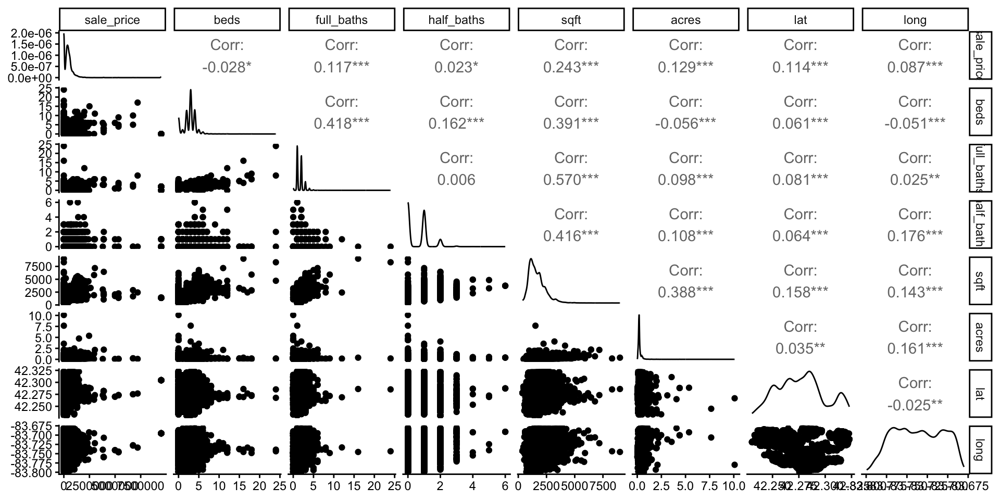
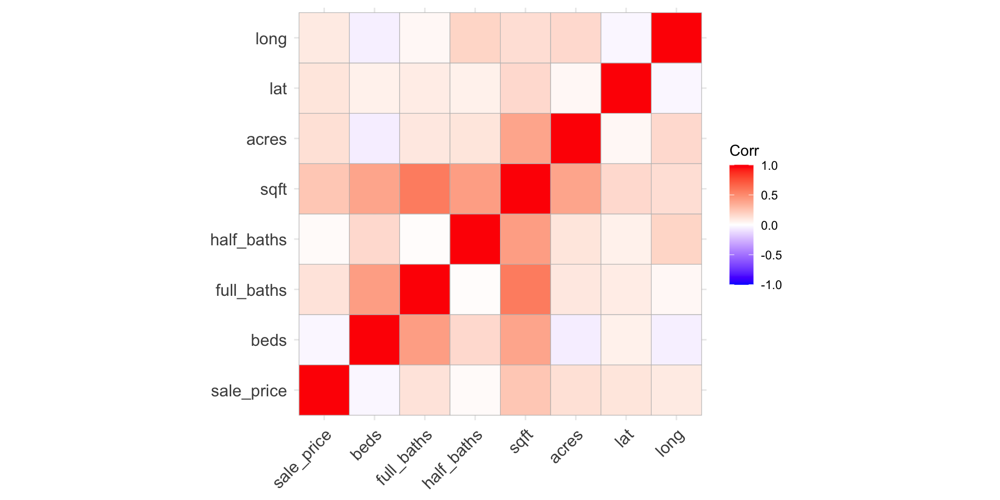
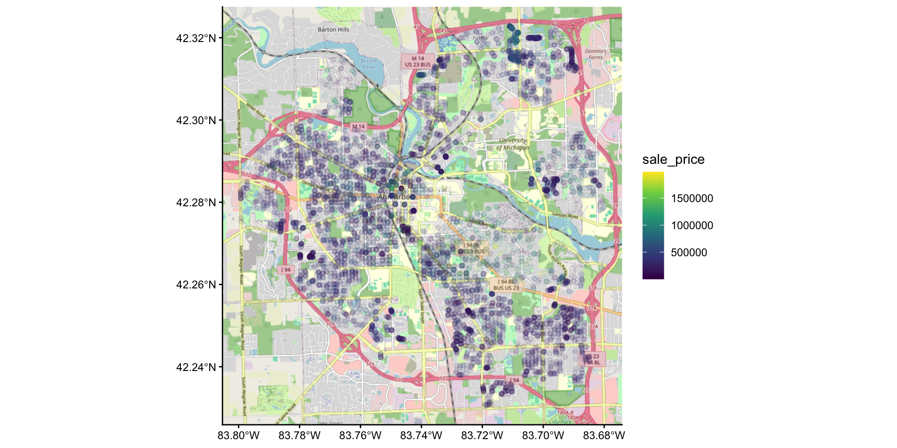
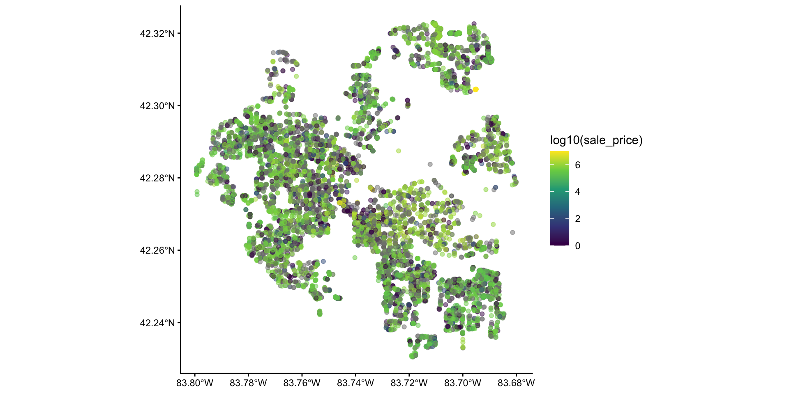
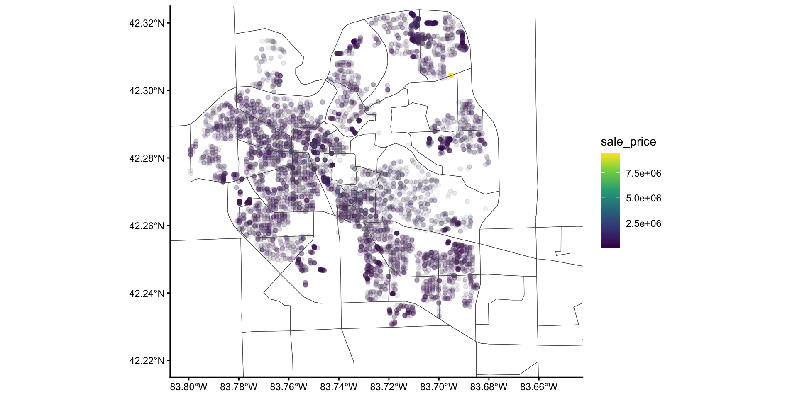

Lecture 13
https://ds306.org/survey3
a2housinga2housing contains information about housing prices in Ann Arbor over the past 4 years.
a2housing is a data frame with ~11k rows and 10 columns.

a2housing has location, given by the address.lat and lon columns contain the latitude and longitude of each house.sf packagesf package.sf package provides functions for reading, writing, and manipulating spatial data.sf objecta2housing to an sf object using the st_as_sf() function.sf objectsWe can plot sf objects using geom_sf().

Everything is related to everything else, but near things are more related than distant things. - Tobler’s First Law of Geography:

st_nearest_feature() function from the sf package to find the nearest neighbor (in the dataset) of each house.nn column contains the index of the nearest neighbor for each house.tidycensus package to obtain census tract shapefiles.B19013_001).
st_join() function from the sf package to perform a spatial join.st_transform() function to transform the CRS of one of the datasetsa2tracts to the CRS of a2housing_sf(a2ht <- a2tracts |> st_transform(st_crs(a2housing_sf)) |>
st_join(a2housing_sf, join = st_contains))Simple feature collection with 11103 features and 13 fields
Geometry type: MULTIPOLYGON
Dimension: XY
Bounding box: xmin: -84.13408 ymin: 42.07158 xmax: -83.5394 ymax: 42.43517
Geodetic CRS: WGS 84
First 10 features:
GEOID NAME variable
1 26161403300 Census Tract 4033; Washtenaw County; Michigan B19013_001
1.1 26161403300 Census Tract 4033; Washtenaw County; Michigan B19013_001
1.2 26161403300 Census Tract 4033; Washtenaw County; Michigan B19013_001
1.3 26161403300 Census Tract 4033; Washtenaw County; Michigan B19013_001
1.4 26161403300 Census Tract 4033; Washtenaw County; Michigan B19013_001
1.5 26161403300 Census Tract 4033; Washtenaw County; Michigan B19013_001
1.6 26161403300 Census Tract 4033; Washtenaw County; Michigan B19013_001
1.7 26161403300 Census Tract 4033; Washtenaw County; Michigan B19013_001
1.8 26161403300 Census Tract 4033; Washtenaw County; Michigan B19013_001
1.9 26161403300 Census Tract 4033; Washtenaw County; Michigan B19013_001
estimate moe sale_price sale_date address
1 104191 22817 NA 2025-10-01 625 BARBER AVE, ANN ARBOR, MI 48103
1.1 104191 22817 345000 2025-09-29 120 MASON AVE, ANN ARBOR, MI 48103
1.2 104191 22817 546500 2025-09-26 628 TREGO CIR, ANN ARBOR, MI 48103
1.3 104191 22817 440000 2025-09-23 770 IRONWOOD DR, ANN ARBOR, MI 48103
1.4 104191 22817 430000 2025-09-12 3110 HILLTOP DR, ANN ARBOR, MI 48103
1.5 104191 22817 440000 2025-09-10 915 PATRICIA AVE, ANN ARBOR, MI 48103
1.6 104191 22817 480000 2025-08-29 646 DELLWOOD DR, ANN ARBOR, MI 48103
1.7 104191 22817 585000 2025-08-27 572 TREGO CIR, ANN ARBOR, MI 48103
1.8 104191 22817 458000 2025-08-22 2529 W TOWNE ST, ANN ARBOR, MI 48103
1.9 104191 22817 420000 2025-08-22 260 WESTOVER AVE, ANN ARBOR, MI 48103
beds full_baths half_baths sqft acres geometry
1 4 1 1 1700 0.459 MULTIPOLYGON (((-83.79957 4...
1.1 3 1 0 962 0.167 MULTIPOLYGON (((-83.79957 4...
1.2 3 3 0 2290 0.284 MULTIPOLYGON (((-83.79957 4...
1.3 3 3 0 1512 1.919 MULTIPOLYGON (((-83.79957 4...
1.4 3 1 1 1196 0.234 MULTIPOLYGON (((-83.79957 4...
1.5 3 1 1 1531 0.209 MULTIPOLYGON (((-83.79957 4...
1.6 3 2 0 988 0.195 MULTIPOLYGON (((-83.79957 4...
1.7 3 2 0 1847 0.202 MULTIPOLYGON (((-83.79957 4...
1.8 3 3 1 1869 NA MULTIPOLYGON (((-83.79957 4...
1.9 0 0 0 NA 0.124 MULTIPOLYGON (((-83.79957 4...sfsf has a good cheat sheet which tells more about the neat things it can do.